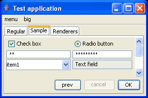
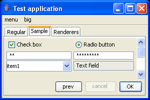
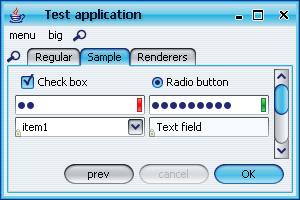
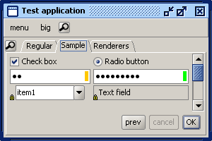
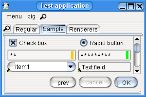
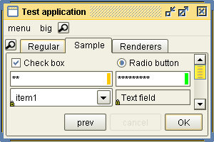
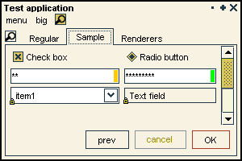
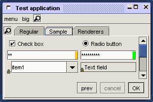
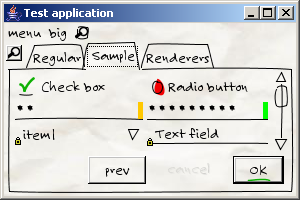

Laf-Widget - support for common "feel" widgets in look-and-feel libraries
The goal of this project is to provide support for and base set of additional behaviour
and widgets in look-and-feels.
Important announcements
Release for version 4.2 (code-named Knotweed) is available.
Look-and-feels that use this library
In addition, few other third-party LAFs have been successfully tested (see screenshots
below).
Overview
This project contains a collection of "behavioural traits" or "widgets" for
third-party Swing look-and-feels. The list of currently provided widgets:
- Auto-completion (model-based / free-text) on editable combo boxes.
- Hover preview of minimized internal frames on desktop icons.
- Menu search panel on menu bars.
- Hover preview of tab in tabbed panes.
- Overview dialog on tabbed panes with optional periodic refresh.
- Tab paging on tabbed panes.
- Password strength checker on password fields.
- Lock border on non-editable text components and model-based editable combo boxes.
- Select all text in text component on focus gain.
- Context menu on text components with edit actions (copy / paste / cut / delete / select all).
- Enhanced drag-and-drop support for trees.
- Scroll pane selector.
- Selecting / deselecting in text components on Escape key press.
View the detailed documentation
on how to enable the above widgets in a specific LAF. Once the steps
described in that document have been completed (by either the LAF developer
or by the LAF user), Swing application running under the
"widgetized" LAF will feature the widgets described above. Here is a sample
application under core Metal and Windows LAFs:
 

Here is the same application under
Substance LAF (note the menu search panel
in the menu bar, the tab overview button, the strength markers on password fields and
the lock icons on disabled text field and editable model-only combobox):

The same application under JGoodies Looks
Plastic XP, Liquid,
Pagosoft,
Squareness,
InfoNode and
Napkin features the same widgets for
the menu bar, combobox, password fields and text fields. Note that the tab overview widget requires
custom LAF support from the relevant LAFs.






Additional resources
Thanks
- To James who proposed the original idea of splitting the
Substance code base and making the
widgets available to all LAFs on this
JavaLobby thread.
- To Thomas
Bierhance for letting use the auto-completion on editable
comboboxes (refactored to fit the listener model and later moved to this
project). This work has been previously released to
public
domain.
- To inostock for providing additional fixes for combobox auto-completion.
- To Antonio
Vieiro for letting use the enhanced tree drag-and-drop (refactored to fit the project
concept). This work was originally released under LGPL and contributed under BSD.
- To Pierre Le Lannic for contributing
the initial version of the scroll pane selector.
- To Nigel Hughes for contributing
code of JCarousel
and JCarouselMenu
to the tab overview dialog (contributed under ASL license in contrib.com.blogofbug
package).
- To Timothy Wall for contributing the smooth list drag-and-drop widget
(original code at
http://abbot.sourceforge.net/demo/).
- To Romain Guy for contributing
image-processing functions (compatible images and thumbnails).
- To Carsten O. Madsen for requesting internationalization
of custom labels (partly moved from the
Substance code base).
- To all the users for trying and using the LAFs that contain these widgets.